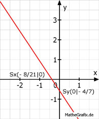

Lineare Funktionen Aufgabe 51 In welchen Punkten schneiden die Geraden die Koordinatenachsen? 3 4 y =- --- x - --- 2 7 Für alle Punkte auf der y-Achse gilt x = 0 Für alle Punkte auf der x-Achse gilt y = 0 3 4 4 y = - --- * 0 - --- = - --- 2 7 7 4 Sy(0| - ---) 7 3 4 4 0 = - --- x - --- | + --- 2 7 7 4 3 --- = - --- x |* 2 7 2 8 --- = - 3x |:-3 7 8 - ---- = x 21 8 Sx( - ---- |0) 21 